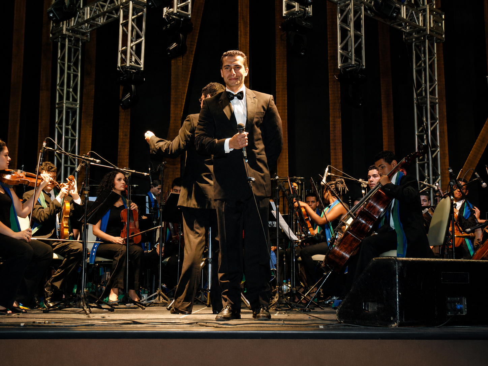
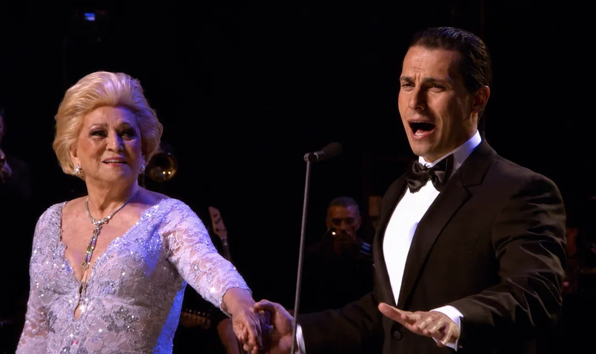
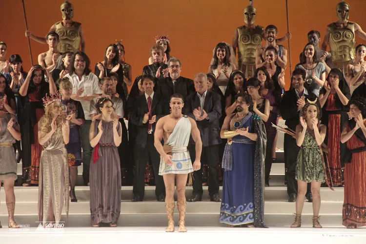

Entdecken
Entdecken

Orquestra Mariuccia IacovinoEin nahes, elegantes und bewegendes Erlebnis
Ein bewegender Abend mit großen Melodien aus Musiktheater, Oper und klassischem Crossover.
Eine intime Begegnung von Stimme, Wort und Melodie mit einem Repertoire, das Generationen verbindet und live neue Bedeutung gewinnt.
Das Konzert entdeckenWie schön, dass Sie hier sind
Dieser Raum vereint ein wenig von meiner Stimme, meiner Geschichte und meiner Leidenschaft für Musik: von der lyrischen Tradition bis zu Liedern, die Generationen verbinden, immer mit dem Wunsch, das Herz der Zuhörenden zu berühren.
Sehen Sie sich das Video an und fühlen Sie sich herzlich willkommen in meiner musikalischen Welt.
Ein Weg durch Bühnen und Begegnungen
Oper, Fernsehen, Crossover und soziale Medien bringen die Kraft des klassischen Gesangs zu immer mehr Menschen.

